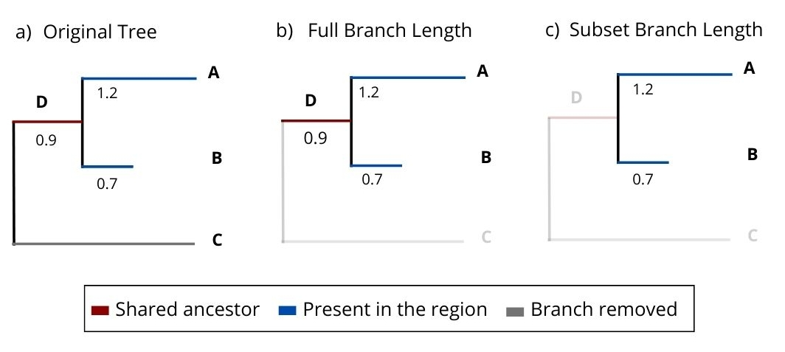

library(phyloraster)
library(terra)
library(ape)
library(phylobase)
library(here)
library(data.table)
library(here)
library(stringr)
library(ggplot2)
library(tidyverse)richness_wendemism_calculation
This .qmd document calculates the richness and weighted endemism for all the species using the phyloraster package.
Then, it calculates the phylogenetic diversity, richness and weighted endemism for the 87 species present in the phylogenetic tree.
##Libraries
- Load the necessary libraries
##Stack of Rasters
- Enter the stack of rasters of the absence/presence of the 177 species we made previously. Then calculate the richness with function rast.sr, finally plot it.
file_list <- list.files(here::here("data/out/raster_species/"), full.names = TRUE, pattern = ".tif")##Richness Calculation
With the rast.sr funcion of the phyloraster, we are going to calculate the richness
files <- lapply(file_list, terra::rast)
richness <- lapply(files, rast.sr)
plot(richness[[3]], main = "Species richness")###Save the richness rasters and the images of it.
With the next functions we are going to save all the rasters and images generated
#' Save a raster object to file
#'
#' This function saves a raster object to the specified file path using the `writeRaster` function.
#'
#' @param output_path Character. The file path (relative to project root) where the raster will be saved.
#' @param raster A Raster* object to be saved.
#'
#' @return No return value. Called for its side effect of saving the raster file.
#' @export
save_raster <- function(output_path, raster) {
writeRaster(raster, here::here(output_path), overwrite = TRUE)
}
#' Save a raster plot as PNG
#'
#' This function saves a visual plot of a raster object as a PNG image with a specified title.
#'
#' @param output_path Character. The file path (relative to project root) where the PNG will be saved.
#' @param raster A Raster* object to be plotted and saved.
#' @param title Character. The title to be displayed on the raster plot.
#'
#' @return No return value. Called for its side effect of saving the PNG image.
#' @export
save_png <- function(output_path, raster, title) {
png(here::here(output_path), width = 3000, height = 2000, res = 300)
plot(raster, main = title)
dev.off()
}outpath_tif <- file.path('data/out/richness_tif',c(paste0('richness_tif_',c(0.135, 0.225, 0.315, 0.405, 0.450),'.tif')))
outpath_png <- file.path('data/out/richness_png',c(paste0('richness_png_',c(0.135, 0.225, 0.315, 0.405, 0.450),'.png')))
titles <- c(paste0('Riqueza de especies (escala ',c(0.135, 0.225, 0.315, 0.405, 0.450), '°)'))
lapply(seq_along(richness), function(x){
save_raster(raster = richness[[x]], output_path = outpath_tif[[x]])
})
lapply(seq_along(richness), function(x){
save_png(raster = richness[[x]], output_path = outpath_png[[x]], title = titles[[x]])
})##Weighted endemism calculation
We calculated the weighted endemism with the function rast.we, then plot it.
wendemism <- list()
for(i in seq_along(files)) {
wendemism[[i]] <- rast.we(x = files[[i]])
}
plot(wendemism[[5]]$WE, main = "Weighted Endemism")###Save the weighted endemism rasters and the images of it.
outpath_tif_we <- file.path('data/out/wendemism_tif',c(paste0('wendemism_tif_',c(0.135, 0.225, 0.315, 0.405, 0.450),'.tif')))
outpath_png_we <- file.path('data/out/wendemism_png',c(paste0('wendemism_png_',c(0.135, 0.225, 0.315, 0.405, 0.450),'.png')))
titles_we <- c(paste0('Endemismo ponderado (escala ',c(0.135, 0.225, 0.315, 0.405, 0.450), '°)'))
lapply(seq_along(wendemism), function(x){
save_raster(raster = wendemism[[x]], output_path = outpath_tif_we[[x]])
})
lapply(seq_along(wendemism), function(x){
save_png(raster = wendemism[[x]], output_path = outpath_png_we[[x]], title = titles_we[[x]])
})##Phylogenetic measures
Here we upload the df of the tree and the records data frame
data_morton <- fread("../../data/in/filogenia/Hipp2019_sample_metadata.csv")
geo_data <- fread("../../data/in/hgbif_completo_iucn.csv")Now, we view the similarities and the differencies between the two.
#TODO: Revisar si los nombres en el correctname que no coinciden con los del morton realmnete no están en la filogenia
#TODO: Decidir si esta es la filogenia que vamos a utilizar
common_morton <- data_morton[`Cleaned_NAMES-USE-THIS` %in% geo_data$correctname,]
common_geo <- geo_data[correctname %in% common_morton$`Cleaned_NAMES-USE-THIS`]
diff<- setdiff(unique(data_morton$`Cleaned_NAMES-USE-THIS`),unique(geo_data$correctname))Existen 87 especies en común entre la filogenia y la base de datos de gbif/herbario.
Tabla de especies comunes
To visualize how many of this species have less than 10 records, we graphed it:
common_geo[,.N, by = correctname][order(-N), more_than_10 := N>10] %>%
ggplot(aes(y = fct_reorder(correctname, N), x = N, fill = more_than_10))+
geom_col()+
labs(x = "Numero de registros", y = "Especies")+
theme_bw()Now we save all the records in the gbif/herbario data frame that are present in the tree.
common_geo <- merge(common_geo,unique(common_morton[,.(`Cleaned_NAMES-USE-THIS`,section,clade,subgenus)]), by.x = "correctname", by.y="Cleaned_NAMES-USE-THIS",all.x = T)
fwrite(common_geo, here::here('data/out/common_geo.csv'), row.names = F)Phylogenetic tree
Clean names of the tree
The next function allows you to replace characters at the tips of the tree.
library(ape)
library(treeio)
library(rotl)
## --- Functions --- ##
#' Modify Tip Labels of a Phylogenetic Tree
#'
#' This function modifies the tip labels of a phylogenetic tree based on a user-defined string transformation function.
#' By default, it removes substrings matching '_ott.*' and replaces underscores with spaces.
#'
#' @param tree A phylogenetic tree (likely of class `phylo`) containing tip labels.
#' @param modify_label_fn A function that takes a character vector of labels and returns a modified character vector.
#' The default function removes '_ott.*' and replaces underscores with spaces.
#'
#' @return A modified phylogenetic tree with updated tip labels.
#' @importFrom tibble as_tibble
#' @importFrom stringr str_replace str_remove str_detect
modify_tips <- function(tree, modify_label_fn = function(x) str_remove(x, '_ott.*')) {
metadata <- as_tibble(tree) %>% mutate(label = modify_label_fn(label))
tree$tip.label <- metadata[which(str_detect(metadata$label, 'Quercus')),]$label
return(tree)
}La filogenia Hipp et al., 2019 con largos de rama medidos en millones de años se puede extraer del Proyecto Open Tree of Life. El paquete de phyloraster tiene dos opciones para calcular la diversidad filogenética. El primero es sumando los largos de rama de un subconjunto de la filogenia y el segundo es conservando los largos de rama pertenecientes a otros grupos no incluidos.

Descargar el árbol de los encinos completo.
El arbol en crudo muestra etiquetas para cada especie. Como se muestra en el siguiente ejemplo: Quercus chrysolepis|USA|CA|CA-DAV-MH20|QUE000293’
Para este caso, no se utilizaran las etiquetas. Por lo que se utiliza la función modify_tips para eliminar las etiquetas y eliminar los espacios, por lo que el ejemplo quedaría de la siguiente manera: Quercus_chrysolepis
complete_tree <- read.tree(here::here('data/in/filogenia/OpenTreeOfLife_hipp2019.tre'))
complete_tree <- modify_tips(complete_tree, modify_label_fn = function(x) str_replace_all(str_remove_all(str_remove(x, '\\|.*'),"\\'"),' |-','_'))Phylogenetic diversity calculation
Cargar las distribuciones de las especies.
Hacer un subset de los rasters que si se encuentran en el arbol (87).
#files = rasters de distribucion por cada escala
sub_dist <- list()
for(i in seq_along(files)) {
names(files[[i]]) <- str_replace_all(names(files[[i]]),' |-','_')
rasters_to_use <- which(names(files[[i]]) %in% str_replace_all(unique(common_geo$correctname),' |-','_'))
sub_dist[[i]] <- subset(files[[i]], rasters_to_use)
}# Revisar que los nombres de las especies estén en el orden que están en el árbol
#Toma las puntas del arbol y busca las que no se encuentran en la base de datos, es decir, y con el sub_tree se eliminan
tips_to_drop <- which(!complete_tree$tip.label %in% str_replace_all(unique(common_geo$correctname),' |-','_'))
sub_tree <- drop.tip(complete_tree,tips_to_drop)
# Con el paquete phyloraster, se reacomodan los datos de los rasters para que esten en el orden de la filogenia.
#Esto arroja un Warning, el cual indica que las especies Quercus_depressipes, Quercus_gambelii no se encuentran en el arbol. Por lo que solo se estaria calculando la PD de 85 especies.
dataprep <- list()
pdr <- list()
for(i in seq_along(sub_dist)) {
#tabla con especies ordenadas
dataprep[[i]] <- phylo.pres(x = sub_dist[[i]], tree = sub_tree)
#el raster del calculo
pdr[[i]] <- rast.pd(x = dataprep[[i]]$x, dataprep[[i]]$tree)
}###Save the PD rasters and the images.
Guardar los rasters con el calculo y las graficas en formato .png
outpath_tif_pd <- file.path('data/out/PD_tif',c(paste0('PD_tif_',c(0.135, 0.225, 0.315, 0.405, 0.450),'.tif')))
outpath_png_pd <- file.path('data/out/PD_png',c(paste0('PD_png_',c(0.135, 0.225, 0.315, 0.405, 0.450),'.png')))
titles_pd <- c(paste0('Diversidad Filogénetica de especies (escala ',c(0.135, 0.225, 0.315, 0.405, 0.450), '°)'))
lapply(seq_along(pdr), function(x){
save_raster(raster = pdr[[x]], output_path = outpath_tif_pd[[x]])
})
lapply(seq_along(pdr), function(x){
save_png(raster = pdr[[x]], output_path = outpath_png_pd[[x]], title = titles_pd[[x]])
})##Richness of the species present in the tree
richness_tree <- lapply(sub_dist, rast.sr)###Save the richness rasters and the images of it.
outpath_tif_rich_tree <- file.path('data/out/richness_tif_tree_species',c(paste0('richness_tif_',c(0.135, 0.225, 0.315, 0.405, 0.450),'.tif')))
outpath_png_rich_tree <- file.path('data/out/richness_png_tree_species',c(paste0('richness_png_',c(0.135, 0.225, 0.315, 0.405, 0.450),'.png')))
titles_richness_tree <- c(paste0('Riqueza de especies presentes en el árbol filogénetico (escala ',c(0.135, 0.225, 0.315, 0.405, 0.450), '°)'))
lapply(seq_along(richness_tree), function(x){
save_raster(raster = richness_tree[[x]], output_path = outpath_tif_rich_tree[[x]])
})
lapply(seq_along(richness_tree), function(x){
save_png(raster = richness_tree[[x]],
output_path = outpath_png_rich_tree[[x]],
title = titles_richness_tree[[x]])
})##Weighted endemism of the species present in the tree
wendemism_tree <- list()
for(i in seq_along(files)) {
wendemism_tree[[i]] <- rast.we(x = sub_dist[[i]])
}
plot(wendemism_tree[[5]]$WE, main = "Weighted Endemism")###Save the weighted endemism rasters and the images of it.
outpath_tif_we_tree <- file.path('data/out/wendemism_tif_tree',c(paste0('wendemism_tif_',c(0.135, 0.225, 0.315, 0.405, 0.450),'.tif')))
outpath_png_we_tree <- file.path('data/out/wendemism_png_tree',c(paste0('wendemism_png_',c(0.135, 0.225, 0.315, 0.405, 0.450),'.png')))
titles_we_tree <- c(paste0('Endemismo ponderado para especies presentes en el árbol filogénetico (escala ',c(0.135, 0.225, 0.315, 0.405, 0.450), '°)'))
lapply(seq_along(wendemism_tree), function(x){
save_raster(raster = wendemism_tree[[x]], output_path = outpath_tif_we_tree[[x]])
})
lapply(seq_along(wendemism_tree), function(x){
save_png(raster = wendemism_tree[[x]], output_path = outpath_png_we_tree[[x]], title = titles_we_tree[[x]])
})